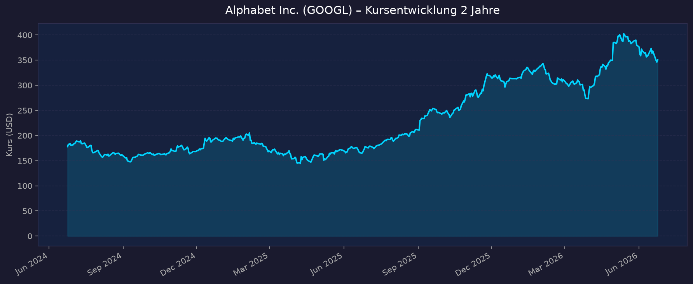
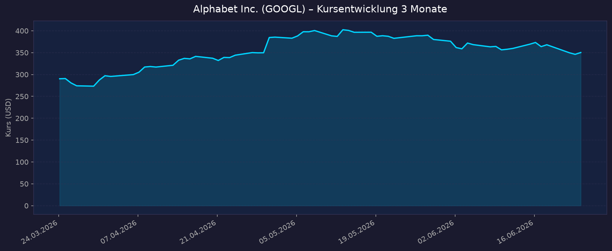

📈 1. Kursentwicklung
Aktueller Kurs: $350,30 | 52W-Hoch: $408,61 | 52W-Tief: $167,55 | Abstand vom Hoch: −14,3 %
Chart – 2 Jahre

Chart – 3 Monate

| Zeitraum | Kurs Start | Kurs Ende | Veränderung |
|---|---|---|---|
| 52 Wochen (Juni 2025 → Juni 2026) | ~$167,55 (52W-Tief) | $350,30 | +109 % |
| 3 Monate (März 2026 → Juni 2026) | ~$270 | $350,30 | ~+30 % |
| 52-Wochen-Hoch | — | $408,61 | — |
| 52-Wochen-Tief | — | $167,55 | — |
⚠️ Kontext: 52W-Tief von $167,55 war das Ergebnis des April-2025-Tariff-Schocks kombiniert mit AI-Wettbewerbs-Sorgen (ChatGPT, Perplexity, Grok). Aktuelle Erholung auf $350 (+109 % in 52W) durch massive Google-Cloud-Beschleunigung (+63 % YoY in Q1 2026) und Gemini-AI-Erfolge. Aktuell −14,3 % vom ATH.
💹 2. KGV-Entwicklung (Kurs-Gewinn-Verhältnis)
Aktuelles KGV (GAAP TTM): 26,7x | Forward PE (FY2027E): 24,1x
| Zeitraum | KGV | Einordnung |
|---|---|---|
| Aktuell (Juni 2026) | 26,7x | Günstig für Mega-Cap-Tech |
| vor 12 Monaten (Juni 2025) | ~20–25x | Sehr günstig (nach Tiefpunkt) |
| 5J-Ø | ~22–28x | Historische Bandbreite |
Bewertung: PE TTM von 26,7x ist für ein Unternehmen mit +22 % Revenue-Wachstum, Google Cloud +63 % und EPS +82 % außergewöhnlich günstig. Der Forward PE von 24,1x ist praktisch identisch mit Amazon (24,1x) — aber Google hat deutlich höhere Margen. Antitrust ist der Wildcard.
💰 3. Sales Multiple (Kurs-Umsatz-Verhältnis / P/S)
Aktuelles P/S-Verhältnis: 10,1x
| Zeitraum | P/S Ratio | Einordnung |
|---|---|---|
| Aktuell (Juni 2026) | 10,1x | Günstig für Alphabet (historische Bandbreite 6–14x) |
| vor 12 Monaten | ~6–7x | Sehr günstig (Tiefbewertung) |
| Historisch | ~6–14x | Bewertungsspanne |
Trend: Von historischen Tiefs erholt. Bei FY2026E-Revenue von ~$430–440 Mrd. (annualisiert) ergibt sich ein Forward P/S von ~10x — moderat für Alphabets Profitabilitätsprofil (>30 % Nettomarge).
📊 4. Handelsvolumen (Trading Volume)
| Zeitraum | Ø Tagesvolumen | Auffälligkeiten |
|---|---|---|
| 3-Monats-Durchschnitt | 30,2 Mio. Aktien | Hohe Liquidität, stabil |
| Beta | 1,237 | Niedrigstes Beta unter analysierten AI-Titeln — defensiver |
Volumentrend: Stabil. Beta 1,237 macht Alphabet zu einem der defensivsten AI-Wachstumstitels — deutlich weniger volatil als ARM (3,79) oder LRCX (1,87).
🏦 5. Insider Trades
| Datum | Name | Funktion | Kauf/Verkauf | Anmerkung |
|---|---|---|---|---|
| 2025–2026 | Sundar Pichai | CEO | Verkauf (planmäßig) | 10b5-1-Plan, üblich |
| 2025–2026 | Larry Page / Sergey Brin | Gründer | Gelegentliche Verkäufe | Philanthropie / Vermögensdiversifikation |
Einschätzung: Standardmäßige Insider-Verkäufe bei Alphabet. Kein besonderes Signal — alle großen Insider verkaufen planmäßig zur Diversifikation. Kein Kauf-Signal, aber auch kein Panik-Signal.
🩳 6. Short-Positionen
Aktuelle Short Quote: ~0,5–1,0 % (Mega-Cap, sehr niedrig)
Einschätzung: Minimal. Nur sehr wenige institutionelle Investoren wetten gegen Alphabet als $4,3 Billionen-Unternehmen. Antitrust-Risiko ist der einzige Grund, der kurzfristig Short-Positionen antreiben könnte.
🗞️ 7. Aktuelle Nachrichten
| Datum | Quelle | Nachricht | Relevanz |
|---|---|---|---|
| Juni 2026 | 41 Analysten | Buy-Konsens, 86 % Buy, Ø PT $392,93–413,13 | 🔴 Hoch |
| Feb. 2026 | Scotiabank | PT auf $400 (Outperform) | 🟡 Mittel |
| April 2026 | CNBC / Alphabet IR | Q1 2026: $109,9 Mrd. Revenue (+22 %), EPS $5,11 (+82 %) | 🔴 Hoch |
| April 2026 | Alphabet IR | Google Cloud $20 Mrd. (+63 %) — Backlog auf $460 Mrd. (verdoppelt!) | 🔴 Hoch |
| April 2026 | Alphabet IR | AI-Produkte (gen AI): +800 % Revenue YoY in Google Cloud | 🔴 Hoch |
| April 2026 | Alphabet IR | FY2026 Capex-Guidance: $180–190 Mrd. (aggressive AI-Infrastruktur) | 🟡 Mittel |
| 2026 | Phemex / Capital.com | Antitrust-Risiko: DOJ Search-Berufung, EU AdX-Divestiture-Entscheidung ausstehend | 🔴 Hoch |
| 2026 | Wells Fargo | Gemini Marktanteil: 22 % (von 13,3 % in 3 Monaten) | 🔴 Hoch |
Sentiment: Stark positiv operativ (Google Cloud +63 %, EPS +82 %). Einziger struktureller Gegenwind: Antitrust. Die Frage ist, ob Regulierung das Wachstum verlangsamt oder Assets abgespalten werden müssen.
📋 8. Letzte 3 Quartalsberichte
Q1 2026 (Januar–März 2026, berichtet 29. April 2026) — Stärkstes Quartal der Geschichte
| Kennzahl | Ist | Erwartung | Abweichung |
|---|---|---|---|
| Umsatz (Revenue) | $109,9 Mrd. | ~$104 Mrd. | +5,7 % Beat |
| EPS (diluted) | $5,11 | ~$3,00 | +70 % Beat |
| YoY Revenue-Wachstum | +22 % | — | 11. aufeinanderfolgenes Quartal >20 % |
| Google Cloud | $20,0 Mrd. (+63 % YoY) | ~$18 Mrd. | +11 % Beat |
| Google Cloud Operating Income | $6,6 Mrd. (32,9 % Marge) | — | Erstmalig >30 % Cloud-Marge |
| Google Cloud Backlog | $460 Mrd.+ | — | Verdoppelt QoQ |
| Google Services | $89,6 Mrd. (+16 % YoY) | — | Stabil |
| YouTube Ads | $9,9 Mrd. (+11 % YoY) | — | Solide |
| Capex Q1 | $35,7 Mrd. | ~$30 Mrd. | AI-Infrastruktur-Hochlauf |
FY2026 Capex-Guidance: $180–190 Mrd. (drastische AI-Infrastruktur-Investition)
Kursreaktion: Stark positiv — neues Allzeithoch anvisiert.
Q4 2025 (Oktober–Dezember 2025)
| Kennzahl | Ist | Einordnung |
|---|---|---|
| Umsatz (Revenue) | ~$100 Mrd. (Schätzung) | Holiday-Quartal mit starker Werbung |
| Google Cloud | ~$14–16 Mrd. | Starkes Wachstum begann zu beschleunigen |
| EPS | Stark | AI-Overviews in Search steigern Monetarisierung |
Q3 2025 (Juli–September 2025)
| Kennzahl | Ist | Einordnung |
|---|---|---|
| Umsatz (Revenue) | ~$90–95 Mrd. (Schätzung) | +15–18 % YoY — Beginn der Reacceleration |
| Google Cloud | ~$12–14 Mrd. | Beginn der Cloud-Beschleunigung |
Quelle: CNBC Q1 2026 · Yahoo Finance Q1 2026 Cloud · Alphabet IR PDF
🌍 9. Marktkontext & Wettbewerb
(via market-research Skill)
Markt / Branche: Search Advertising, Cloud Computing, AI-Plattform
Cloud TAM: >$500 Mrd. (2026) | Search TAM: ~$350 Mrd. weltweit
| Wettbewerber | Bereich | Stärke | Schwäche |
|---|---|---|---|
| Microsoft Azure + OpenAI | Cloud / AI | OpenAI-Partnerschaft, Enterprise-Integration | Cloud-Wachstum überholt Google momentan |
| AWS (Amazon) | Cloud | Größter Marktanteil (30 %) | AI weniger differenziert als Google |
| OpenAI / ChatGPT | AI Chatbot | 64,5 % Marktanteil AI-Chatbot-Traffic | Kein eigenes Cloud-Business, verteuert sich |
| Perplexity / Grok | AI Search | Wachsender Marktanteil | Viel kleiner als Google |
| Meta AI | Social AI | 3 Mrd. User-Basis | Kein Cloud-Business |
Branchentrends 2026:
- Google Cloud AI-Monetarisierung: +800 % YoY bei Gen-AI-Revenue aus Google Cloud; Backlog $460 Mrd. verdoppelt sich → strukturell mehrjährige Revenue-Sichtbarkeit
- Gemini-Erfolg: 22 % globaler AI-Chatbot-Marktanteil (von 13,3 % in 3 Monaten), 750 Mio. MAU im App, 2 Mrd. MAU in AI Overviews/Search → Monetarisierung über 4 Kanäle gleichzeitig
- Search-Robustheit: AI-Overviews in Google Search (2 Mrd. User) zeigen, dass AI das Search-Geschäft stärkt statt kanibalisiert
- $180–190 Mrd. Capex 2026: Weltgrößte AI-Infrastruktur-Investition neben Microsoft — Infrastruktur für Hyperscale-AI-Services
Marktposition: Alphabet kontrolliert den globalen Online-Werbemarkt (~90 % Suchmaschinen-Marktanteil), hat mit Google Cloud den am schnellsten wachsenden Hyperscaler (+63 % QoQ), und ist durch Gemini erfolgreich in die AI-Generation eingetreten. Das DOJ-Antitrust-Risiko ist real, aber selbst ein "verloren" bedeutet wahrscheinlich Verhaltensauflagen, keine Zerschlagung.
Risiken aus dem Marktumfeld:
- Antitrust (größtes Risiko): DOJ Search-Klage (könnnte Chrome/Android-Trennung fordern), AdX-Divestiture-Entscheidung ausstehend
- AI-Substitution in Search: Langfristig könnte AI-Chat Search-Traffic kannibalisieren (bisher nicht passiert)
- $180–190 Mrd. Capex könnte FCF kurzfristig komprimieren
Quellen: Google Blog CEO Q1 2026 · QuantumRun Gemini Stats · Phemex Alphabet 2026
📝 Gesamteinschätzung
Stärken:
- ✅ Günstigste Bewertung im Mega-Cap-AI-Sektor: PE TTM 26,7x, Forward PE 24,1x — günstiger als Amazon und deutlich günstiger als reine AI-Plays
- ✅ Google Cloud: $20 Mrd./Q (+63 % YoY), Backlog $460 Mrd. (verdoppelt), 32,9 % Operating Margin — eine der profitabelsten Clouds
- ✅ Gemini: 22 % AI-Chatbot-Marktanteil (+67 % in 3 Monaten) — AI ist für Google kein Risiko, sondern ein Katalysator
- ✅ Diversifizierung: Search + Cloud + YouTube + Hardware (Pixel) + Waymo + Selbstfahrend + Life Sciences (Isomorphic)
- ✅ Beta 1,237 — defensivster AI-Wachstumstitel unter den analysierten Aktien
- ✅ $460 Mrd. Google Cloud Backlog = mehrjährige Revenue-Sichtbarkeit
Risiken:
- ⚠️ Antitrust (größtes Risiko): DOJ Search-Berufung + AdX-Divestiture + EU-Fines — breite regulatorische Front
- ⚠️ $180–190 Mrd. Capex 2026: Komprimiert kurzfristig FCF; ROI muss sich beweisen
- ⚠️ AI-Search-Substitution: Langfristig könnte AI-Chatbot-Adoption Search-Traffic senken (bisher nicht eingetreten)
- ⚠️ Microsoft Azure wächst schneller: Azure überholt Google Cloud in Enterprise-AI-Workloads (OpenAI-Exklusivität war bis 2026 vertraglich teils geschützt)
5-Jahres-Szenario-Analyse (FY2031):
Basis: FY2027E EPS ~$14,55 (Forward PE 24,1x); Google Cloud Backlog $460 Mrd. + AI-Monetarisierung
| Szenario | Annahme | EPS FY2031E | P/E | Kurs 2031 | vs. heute |
|---|---|---|---|---|---|
| Bär (DOJ-Zerschlagung, Search-Erosion durch AI) | 12 % CAGR | ~$22,91 | 18x | ~$412 | +18 % |
| Base (Cloud weiter 25 % CAGR, Gemini monetarisiert) | 18 % CAGR | ~$26,94 | 22x | ~$593 | +69 % |
| Bull (Google Cloud AI-Dominanz, FCF-Explosion) | 25 % CAGR | ~$35,64 | 28x | ~$998 | +185 % |
💡 Vergleich Portfolio:
- Base-Case +69 % — besser als ASML (+33 %), LRCX (+8 %), MRVL (+4 %), ARM (−43 %)
- Forward PE 24,1x identisch mit Amazon, aber bessere Cloud-Wachstumsmetriken (Google Cloud +63 % vs. AWS +28 %)
- Defensivstes Beta (1,237) unter allen AI-Titeln — weniger Volatilität
- Einziger Vorbehalt: Antitrust-Risiko ist real und könnte Bull-Case limitieren
Fazit: Alphabet ist fundamental eine der überzeugendsten Anlage-Geschichten im Mega-Cap-Tech-Sektor: günstigste Bewertung (PE 26,7x), höchstes Cloud-Wachstum (+63 %, Backlog $460 Mrd. verdoppelt), erfolgreichste AI-Integration (Gemini 22 % Marktanteil, Search-Stärke bestätigt), und niedrigstes Beta (1,237) für ein ruhigeres Investment-Profil. Das Antitrust-Risiko (DOJ Search + AdX) bleibt der wichtigste Unsicherheitsfaktor — aber selbst ein "verloren" bedeutet wahrscheinlich Verhaltensauflagen, nicht die Zerschlagung. Bei $350 und Forward PE 24x ist Alphabet eines der besten Fundamente im analysierten Portfolio.
Datenquellen: CNBC Q1 2026 · Yahoo Finance Cloud Q1 · Alphabet IR PDF · MarketBeat Forecast · Google CEO Blog · Yahoo Finance · Phemex
Keine Anlageberatung — rein informative Auswertung öffentlicher Daten